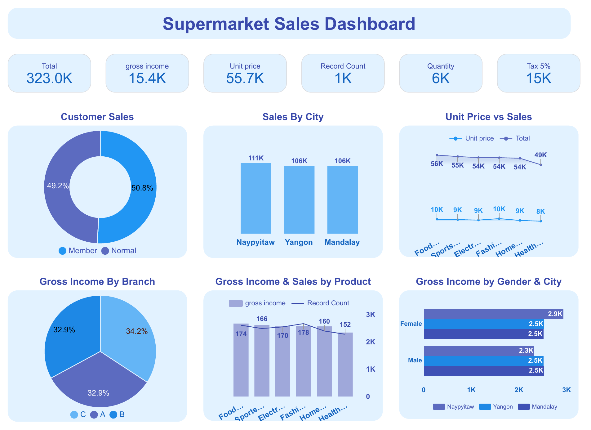

Supermarket Sales Dashboard
Created by Sana Naik
A Looker Studio dashboard that analyses supermarket sales by customer type, city, branch, product line and gender.
Total sales323.0K
Gross income15.4K
Records1K
Quantity sold6K

What the dashboard shows
- Customer sales split between members (50.8%) and normal customers (49.2%)
- Sales by city: Naypyitaw 111K, Yangon 106K and Mandalay 106K
- Gross income by branch: C 34.2%, A 32.9% and B 32.9%
- Unit price against sales for six product lines: food, sports, electronics, fashion, home and health
- Gross income and record count by product line
- Gross income by gender and city
Tap the picture to see it full size.